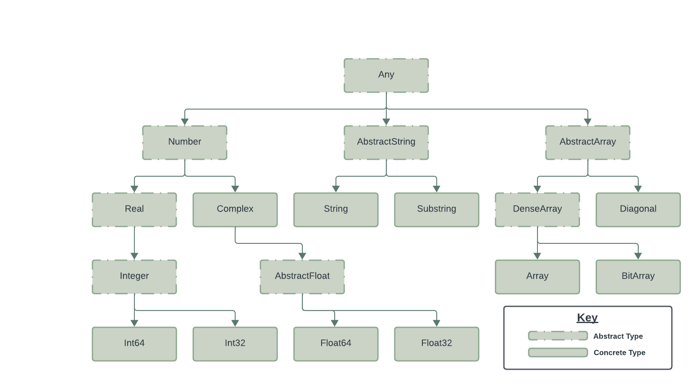

3. Data Types and Structures#
The primary purpose of data typing is to create “variables whose substitution for each other in any context will not result in a compile-time error”1. In high-level programming languages this is typically accomplished through the implementation of a type system that formalizes and enforces both the range of values that can be associated with and the operations that can be performed on any term.
The adoption of a typing system has implications beyond simply preventing compile-time errors as it necessarily limits the range of values that you can and cannot store in any variable and also the operations you can and cannot perform on it. When properly understood and implemented, however, type systems can be exploited to significantly improve performance while at the same time ensuring computational accuracy and reducing system error. This chapter focuses on understanding the structure of Julia’s type system with a particular eye on achieving these positive outcomes.
Learning Objectives
Understand how Julia accommodates both Dynamic and Statically typed variables;
Identify the Abstract and Primitive data types that comprise Julia’s type system;
Understand how Parametric Typing works in Julia;
Identify different methods for converting between data types, including the implications of these conversions;
Identify common scenarios where data typing can be used to improve code performance and computational accuracy.
3.1. Overview#
3.1.1. Dynamic Typing#
Like Python, Perl, Javascript, PHP, Ruby, and many other programming and scripting languages, Julia’s type system operates by default as a Dynamic type system which does not require the use of type declarations at the time of variable creation.
# assign the integer value 10 to the variable x
x = 10
# reassing the literal value "hello world" to the variable x
x = "hello world"
"hello world"
In the above example, we first assign the integer value ‘10’ to the variable x, and then immediately reassign the literal value, “hello world” to the same variable. This is possible because in Dynamic type systems the actual data type of a variable is assigned at runtime based on the value assigned to it at any point in the run process. In the above example, the runtime environment interprets ‘10’ as an integer at the time of variable declaration and dynamically types the variable as an integer. In our next line of code, where we assign the literal value “hello world” to x, the runtime environment re-declares and dynamically assigns the data type of string to the variable x at the time of the assignment.
The dynamic type systems deployed by modern programming and scripting languages are quite robust and generally well-functioning. However, several classes of problems are commonly associated with dynamic typing, regardless of the programing environment. These include type-related errors, increased difficulty debugging code, the production of code that is less clear and maintainable, and suboptimal performance.
3.1.1.2. Debugging Difficulties#
Debugging dynamically typed applications can prove difficult because different functions and operations behave differently when they encounter type errors.
x = "Hello"
result = x + 10
MethodError: no method matching +(::String, ::Int64)
Closest candidates are:
+(::Any, ::Any, ::Any, ::Any...)
@ Base operators.jl:587
+(::BigFloat, ::Union{Int16, Int32, Int64, Int8})
@ Base mpfr.jl:447
+(::Missing, ::Number)
@ Base missing.jl:123
...
Stacktrace:
[1] top-level scope
@ In[4]:2
Running the above code will produce the following error:
ERROR: MethodError: no method matching /(::String, ::Int64)
Closest candidates are:
/(::Union{Int128, Int16, Int32, Int64, Int8, UInt128, UInt16, UInt32, UInt64, UInt8}, ::Union{Int128, Int16, Int32, Int64, Int8, UInt128, UInt16, UInt32, UInt64, UInt8}) at int.jl:97
/(::StridedArray{P}, ::Real) where P<:Dates.Period at /Applications/Julia-1.8.app/Contents/Resources/julia/share/julia/stdlib/v1.8/Dates/src/deprecated.jl:44
/(::Union{SparseArrays.SparseVector{Tv, Ti}, SubArray{Tv, 1, <:SparseArrays.AbstractSparseMatrixCSC{Tv, Ti}, Tuple{Base.Slice{Base.OneTo{Int64}}, Int64}, false}, SubArray{Tv, 1, <:SparseArrays.AbstractSparseVector{Tv, Ti}, Tuple{Base.Slice{Base.OneTo{Int64}}}, false}} where {Tv, Ti}, ::Number) at /Applications/Julia-1.8.app/Contents/Resources/julia/share/julia/stdlib/v1.8/SparseArrays/src/sparsevector.jl:1506. …
Stacktrace:
[1] divide(x::String, y::Int64)
@ Main ./Untitled-1:2
[2] top-level scope
@ Untitled-1:8
Following the Stacktrace and identifying the source of the error is a relatively simple activity given our short example, which contains inefficient and redundant code. However, if our assignment of x was happening inside any type of iterative process, it would quickly become difficult to track down the source of any type error.
3.1.1.3. Lack of Code Clarity#
Dynamic typing will also allow human coders to construct (through oversight or carelessness) unclear code that compiles successfully but can generate errors later in the application process. Consider the following:
function mystery_function(x)
if rand() > 0.5
return x * 2
else
x = "Nothing to see here"
return x
end
end
result = mystery_function(5)
"Nothing to see here"
While the above example will run without error, it generates confusion about the type of return, which can lead to a host of problems with later operations being performed on x.
3.1.1.4. Suboptimal Performance#
A final deficit of dynamic typing is that is can, and frequently does, result in longer processing time per operation. Because this is an area of particular concern for most Julia operations, this particular problem is addressed in detail in its own section later in this tutorial.
3.1.2. Static Typing#
Static data typing, also known as static typing or static type checking, address all of the above issues. It refers to a programming language feature where variable types are determined and checked at compile time, i.e., before the program is executed. In statically typed languages, the data type of a variable is explicitly declared when the variable is defined, and the compiler enforces that variables are used consistently according to their declared types throughout the program. Key characteristics of statically typed systems include:
Explicit type declarations: Variables must be explicitly declared with their data types when they are defined;
Type checking at compile-time: The compiler checks the type compatibility of variables, expressions, and function calls at compile time. It ensures that operations involving variables are valid according to their declared types;
Type safety: Static typing helps catch type-related errors early in the development process, reducing the likelihood of runtime errors related to type mismatches or incorrect data usage;
Improved tooling and code analysis: Static typing allows for more advanced code analysis tools and IDE features, such as auto-completion, code navigation, and refactoring support, because the compiler has knowledge of variable types.
3.1.3. Julia’s Type System#
Julia allows developers to have their typing cake and eat it to. If variables and objects are declared without type declarations (as in all of our above examples), the Julia compiler and runtime will dynamically type variables as needed. However, Julia also provides a syntax and functionality for statically typing variables when they are declared. In most instances a Julia application that relies on dynamic typing will run error free and produce accurate results. However, programmers can avoid the types of errors introduced by dynamic processing and significantly increase code performance by providing type annotations to variable declarations.
myInt::Int = 10
myString::String = "hello world"
println(myInt)
println(myString)
10
hello world
The example above illustrates the Julia method of annotating a variable instantiation with a data type. Here we declare the variable myInt as a variable of type Integer and the variable myString as a variable of type String value. When we do this, the Julia compiler will check all operations performed on these variables anywhere else in our code at compile time to ensure that they are legal operations for the annotated data type.
3.1.3.1. The Julia data type hierarchy#
The following figure provides an high-altitude view of the Julia data type model:

A full discussion of the entire Julia data-type hierarchy, is beyond the scope of this introductory tutorial. The Types chapter of the Juilia Documentation provides an excellent discussion of the various data types, their functions, and limitations. You can also use the subtypes() function to list all subtypes of a given abstract type in type hierarchy:
subtypes(Number)
3-element Vector{Any}:
Base.MultiplicativeInverses.MultiplicativeInverse
Complex
Real
Calling subtypes() with the “Any” argument will effectively list all data types since “Any” is the root of the type hierarchy in Julia:
subtypes(Any)
605-element Vector{Any}:
AbstractArray
AbstractChannel
AbstractChar
AbstractDict
AbstractDisplay
AbstractMatch
AbstractPattern
AbstractSet
AbstractString
Any
Base.ANSIDelimiter
Base.ANSIIterator
Base.AbstractBroadcasted
⋮
Timer
Tuple
Type
TypeVar
UndefInitializer
Val
VecElement
VersionNumber
WeakRef
ZMQ.Context
ZMQ.Socket
ZMQ._Message
What is important to remember at this point is that all variables are ultimately stored in memory by Julia as one of the data types defined in the Julia data type hierarchy, whether a programmer statically types variables or relies on Julia to dynamically type them. This has very real implications for how the code will function. And, as a matter of practice, it is beneficial to understand these implications as they will affect the ability of your code to run error free as well as the speed execution and accuracy of outputs.
3.2. Performance#
As noted above, one of the primary benefits of static type casting is that it can substantially increase performance. In the below example we create two data.frames, one of type Any and one of type Float64, fill them with a sequence of numbers from 1 to 1,000, and then perform a basic math operation on each. As reflected in the output, this simple process is nearly 4 times faster when performed on the properly cast data.frame.
using DataFrames
using BenchmarkTools
AnyXY = rand(100,2)
# Create a Dataframe with Any-type
AnyDF = DataFrame([[],[]],["AnyX","AnyY"])
# Fill AnyDF
for i in 1:100 push!(AnyDF,AnyXY[i,:]) end
# Create a new Column and measure the time
@btime AnyDF.Z .= $AnyDF.AnyX + $AnyDF.AnyY #5.317 μs (118 allocations: 3.91 KiB)
# Create a Dataframe with Float64-type
FloatDF = DataFrame(AnyXY,["FloatX","FloatY"])
# Create a new Column and measure the time
@btime FloatDF.Z .= $FloatDF.FloatX + $FloatDF.FloatY #1.430 μs (11 allocations: 2.05 KiB)
4.478 μs (117 allocations: 3.89 KiB)
1.010 μs (10 allocations: 2.03 KiB)
100-element Vector{Float64}:
0.4830398557317718
1.286316952066557
0.7969566937125017
1.0837642137367558
0.8388597628748303
1.1654888064402256
0.8727418884773902
1.6317294651218104
1.4353974114027017
1.944276010622466
0.6261564292181734
1.4935978195156279
0.66451365945635
⋮
0.5360134572086673
0.7322088742632745
1.2222628098781358
1.0261309616820755
0.7349387408991302
0.9532859989329721
0.9280647995859929
0.7782594321230154
0.3865771926843521
1.2745005489133157
1.0554260613544133
0.9095595761135995
3.3. Parametric Typing#
Parametric type casting refers to the process of explicitly converting an object from one type to another. In Julia, parametric types are types that take one or more type parameters. For example, Array{T} is a parametric type where T is a type parameter representing the type of elements stored in the array. Julia provides a syntax for creating parametrically typed objects as follows:
struct MyType{T}
value::T
end
x = MyType{Float64}(5.0)
MyType{Float64}(5.0)
Parametric typing provides flexibility by allowing you to defer specifying concrete types until later in the development process. This makes your code more adaptable to changing requirements and allows for greater interoperability between different parts of your codebase. Additionally, Despite its flexibility, parametric typing maintains type safety by enforcing type constraints at compile time. The compiler ensures that operations performed on values of the instantiated type are valid according to the type parameters specified by the generic type definition.
3.4. Type Conversion#
As discussed above, statically typing variables can offer significant code optimization advantages in Julia. However, as with everything in life, there is a cost. It is common in most programming situation to need to treat the same value as a different type in different contexts. For example, after calculating a value stored in a Integer cast variable we may want to print that value to a text file, an operation that can only be performed on text cast objects. Similarly, we may need to place a value stored in a variable cast as one data type into a collection object that only holds values of another type. The process of converting a value from one data type to another is known as Data type conversion, type casting, or type coercion.
3.4.1. Basic Type Conversion Functions#
Julia provides several functions and mechanisms for type conversion, allowing you to seamlessly convert between different data types when necessary.
3.4.1.1. parse#
The parse function is used to convert a string representation of a value to another data type. It is commonly used to convert strings to numerical types or other data types.
str::String = "10"
num = parse(Int, str)
10
3.4.1.2. convert#
The convert function is a more general-purpose conversion function that converts values between different data types. It’s often used for explicit type conversions.
a = Any[1 2 3; 4 5 6]
b = convert(Array{Float64}, a)
2×3 Matrix{Float64}:
1.0 2.0 3.0
4.0 5.0 6.0
Note that conversion isn’t always possible, in which case a MethodError is thrown indicating that convert doesn’t know how to perform the requested conversion:
julia> convert(AbstractFloat, “foo”)
ERROR: MethodError: Cannot
convertan object of type String to an object of type AbstractFloat[…]
3.4.1.3. promote#
Julia also has a built-in function for promoting related data types to a common parent as a way of normalizing the two types. As defined in the Julia documentation:
Promotion refers to converting values of mixed types to a single common type. Although it is not strictly necessary, it is generally implied that the common type to which the values are converted can faithfully represent all of the original values.
In the example below, we use promotion to coerce the Int64 type ‘1’ and the Float64 type ‘2.5’ both to the type Float64:
promote(1, 2.5)
(1.0, 2.5)
- 1
Parnas, David L.; Shore, John E.; Weiss, David (1976). “Abstract types defined as classes of variables”. Proceedings of the 1976 conference on Data : Abstraction, definition and structure. pp. 149–154. doi:10.1145/800237.807133